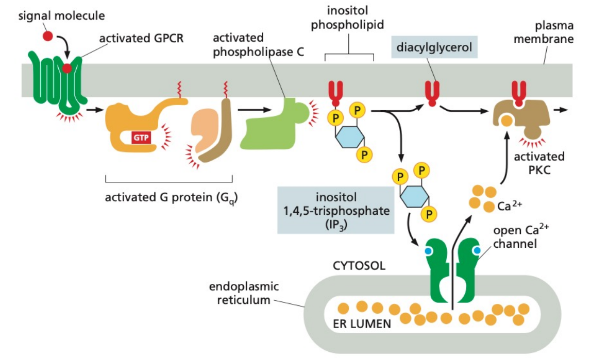

Từ tín hiệu ngoài tế bào đến đáp ứng và tắt tín hiệu
VN09 và EN09 · Truyền tín hiệu · 5 trắc nghiệm và 1 tự luận
Bắt đầu học ↓Học trọn chương và làm bộ 80 trắc nghiệm, 15 tự luận
Sau buổi này
- Phân loại tín hiệu theo đường tới tế bào đích và vị trí receptor.
- Nối GPCR–PLC với IP₃, DAG và Ca²⁺.
- Phân biệt khuếch đại, phân nhánh và tắt tín hiệu trong mô hình.
Gợi nhớ
Vẽ hai tế bào đặt cạnh nhau. Chọn ví dụ một tín hiệu cần tiếp xúc và một tín hiệu có thể đến từ xa qua tuần hoàn.
Học kiến thức qua hình
Quan sát hình minh họa

Sơ đồ giữ nguyên vị trí DAG, IP₃ và kênh giải phóng Ca²⁺ trên lưới nội chất.
Quan sát · Chỉ nhánh chạy dọc màng và nhánh đi đến lưới nội chất. Đọc tên sản phẩm nằm trên mỗi nhánh.
Dự đoán · Nếu Ca²⁺ bào tương tăng mà ligand vẫn ở ngoài tế bào, chất trung gian nào đi được từ màng tới kênh trong hình?
Mở giải thích sau khi dự đoán
IP₃ hòa tan truyền tín hiệu từ nơi PLC cắt lipid tới kênh trên lưới nội chất. DAG giữ đuôi lipid nên vẫn ở màng, trong một nhánh truyền tin khác.
- Nhận ligand
GPCR hoạt hóa G protein phù hợp.
- Cắt PIP₂
PLC tạo IP₃ hòa tan trong bào tương và DAG ở màng.
- Tín hiệu Ca²⁺
IP₃ tác động lên kênh ở lưới nội chất, làm Ca²⁺ bào tương tăng.
- Hồi phục
GTP bị thủy phân, chất truyền tin bị loại và gradient Ca²⁺ được tái lập.
Chú ý vị trí của IP₃ và DAG sau khi tách PIP₂.
Đọc hình để tự rút ra cơ chế
Quan sát · Sau một xung ngắn, Ca²⁺ tăng dù ligand ngoài màng không đi vào trong.
Dự đoán · Trong nhánh PLC, phân tử nào nối receptor với Ca²⁺ trong lưới nội chất?
Mở giải thích sau khi dự đoán
IP₃ đi trong bào tương và truyền tín hiệu đến kênh trên lưới nội chất; ligand không cần tự đi qua màng.
Đường truyền và receptor
Nội tiết truyền xa qua tuần hoàn; cận tiết tác động gần; synapse truyền qua khe hẹp tới đích cụ thể; tín hiệu phụ thuộc tiếp xúc cần hai tế bào kề nhau. Receptor màng nhận nhiều ligand khó qua lớp kép. Một số hormone nhỏ kỵ nước đi tới receptor nội bào. Hai tế bào có thể đáp ứng khác với cùng tín hiệu nếu receptor hoặc mạng nội bào khác.
Hai đường sau GPCR
G protein dị tam chuyển GDP sang GTP để hoạt hóa và thủy phân GTP để tắt. Ở nhánh Gs, adenylyl cyclase làm cAMP tăng; phosphodiesterase phân hủy cAMP. Ở nhánh PLC, cắt PIP₂ tạo IP₃ đi trong bào tương và DAG giữ ở màng; IP₃ có thể mở đường giải phóng Ca²⁺ từ lưới nội chất.
Hai cách điều hòa gene
Tín hiệu tiếp xúc qua Notch có thể giải phóng miền nội bào của receptor để tham gia điều hòa trong nhân. Hormone steroid có thể gắn trực tiếp receptor nội bào; phức hợp tác động lên biểu hiện gene. Phosphoryl hóa không mặc định bật mọi protein.
Định vị trong mạng
Chuỗi có thể khuếch đại, phân nhánh, tích hợp nhiều tín hiệu và tự điều chỉnh bằng phản hồi. Đo nhiều mức trước/sau bỏ ligand giúp phân biệt bật mạnh, kéo dài do khó tắt và đáp ứng gene chậm.
Liên hệ thực tế
Một hiệu ứng kéo dài có thể do khâu tắt yếu dù mức kích hoạt ban đầu bình thường. Đo trước, trong và sau khi ngừng tín hiệu giúp tách hai cơ chế.
Cụm bài tập
Bảng đọc nhiều tín hiệu của cùng mô
A là hormone theo tuần hoàn tới mô xa; B chỉ gây đáp ứng khi hai tế bào kề tiếp xúc trong mô hình Notch. C ghi Ca²⁺ tăng sau nhánh GPCR–PLC. D ghi cAMP giảm dần khi bỏ ligand. E là steroid kỵ nước có receptor điều hòa gene trong tế bào.
Đối chiếu bài làm
Chọn một chỗ còn phân vân. Giải thích lại bằng lời của mình rồi thử một câu cùng dạng.